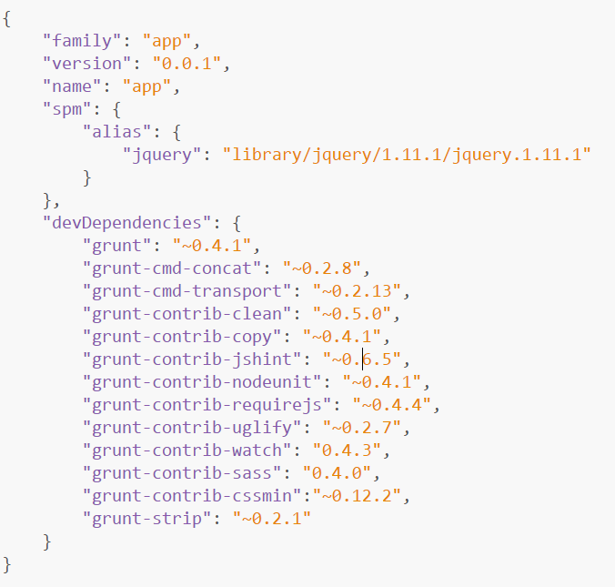

项目采用seajs作为js模块化工具，用sass构建css模块，通用类库为cmd封装后的jquery。
项目采用grunt构建，并自动化。
目录说明：
root
docs项目前端文档
server放置nodejs文件，用于前端模拟测试数据交互。
dist编译后的文件，由grunt生成，无需人工维护。
fonts项目依赖webFont文件，相关声明请查阅:root/src/common/scss/base/base.scss
mobile_icons
iconfont.woff
library通用类库文件（一般需要经过cmd封装）
jqueryjquery类库文件夹
x.xxx.x相关版本号
name.js压缩后类库文件
name-debug.js源代码文件
pluginjquery类库插件
pluginName插件文件夹
pluginName.js
pluginName.css
node_modulesgrunt依赖文件，无需人工维护
seajsseajs源文件
images项目所有图片文件
common多页面共用文件
resources资源性文件
decoration装饰性文件
pages
pageName单页面文件
resources资源性文件
***.jpg
***.gif
***.png
decoration装饰性文件
***.jpg
***.gif
***.png
pageName单页面文件
resources资源性文件
***.jpg
***.gif
***.png
decoration装饰性文件
***.jpg
***.gif
***.png
src项目源文件（js文件为cmd模块，css全部为sass文件）
common项目公共js，sass文件
js项目工具类方法，非插件
name1
name1.js
name1.scss
testdome及测试文件
name2
name2.js
name2.scss
testdome及测试文件
scss存放项目公共scss文件
base项目公用样式
base.scss
variable项目全局变量（页面不直接引用）
variable.scss
input项目表单全局样式
input.scss
mixins项目公共mixin，（页面不直接引用）
mixins.scss
reset项目重置css样式
reset.scss
pages
pageName
js
main.js
data.js
show.js
style
index.scss
tab.scss
banner.scss
Gruntfile.jsGrunt配置文件（重要文件，请勿随意更改）
package.jsonGrunt依赖文件（重要文件，请勿随意更改）
seajs-configseajs配置文件（重要文件，请勿随意更改）
环境配置：
1安装node
https://nodejs.org/
2安装ruby及sass
因为sass依赖于ruby环境，所以装sass之前先确认装了ruby。先导官网下载ruby
在安装的时候，请勾选Add Ruby executables to your PATH这个选项，添加环境变量，不然以后使用编译软件的时候会提示找不到ruby环境

淘宝RubyGems镜像安装 sass
由于国内网络原因（你懂的），导致 rubygems.org 存放在 Amazon S3 上面的资源文件间歇性连接失败。这时候我们可以通过gem sources命令来配置源，先移除默认的https://rubygems.org源，然后添加淘宝的源https://ruby.taobao.org/，然后查看下当前使用的源是哪个，如果是淘宝的，则表示可以输入sass安装命令gem install sass了。具体操作演示如下：
$ gem sources --remove https://rubygems.org/
$ gem sources -a https://ruby.taobao.org/
$ gem sources -l
*** CURRENT SOURCES ***
https://ruby.taobao.org
# 请确保只有 ruby.taobao.org
$ gem install sass
3svn同步文件
4安装grunt
进入项目web目录，打开cmd，输入以下命令
$ npm install
这时npm会根据package.json中的配置自动下载相关文件，如果是package.json的内容：

5运行grunt watch
在控制台输入grunt watch，如出现以下信息，则表示项目相关配置正确完成
$ grunt watch
Running "watch" task
waiting...